帝曰：上古圣人作汤液醪醴，为而不用何也？岐伯曰：自古圣人之作汤液醪醴者，以为备耳！夫上古作汤液，故为而弗服也。
——黄帝内经·素问·汤液醪醴论

暮春｜节气｜ 谷雨 ｜时间｜ 四月二十日至五月五日
今年谷雨需特别注意的健康问题：口舌生疮、过敏、发热、传染病
原料：陈皮、蜂蜜、绿茶。
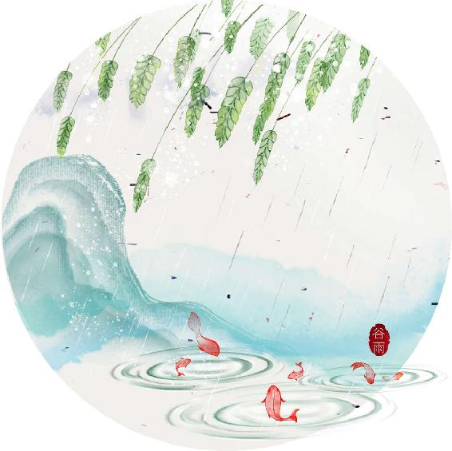
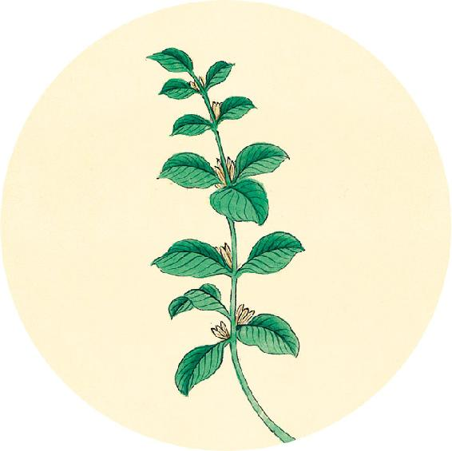
节气茶方（一）
清肝养脾茶
原料：陈皮1/2个、蜂蜜（可选柑橘蜜或油菜蜜）、绿茶（胃溃疡患者、女性经期、体寒者去掉绿茶）。
做法：
1. 半个陈皮掰碎，与适量绿茶一起冲泡。
2. 茶水倒入杯中，晾温后加少量蜂蜜饮用。
脾胃虚弱者、老年人平时饮绿茶也可以搭配陈皮、蜂蜜，来保护脾胃。
帝曰：上古圣人作汤液醪醴，为而不用何也？岐伯曰：自古圣人之作汤液醪醴者，以为备耳！夫上古作汤液，故为而弗服也。
——黄帝内经·素问·汤液醪醴论
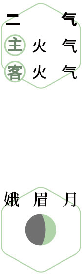
 候雨
候雨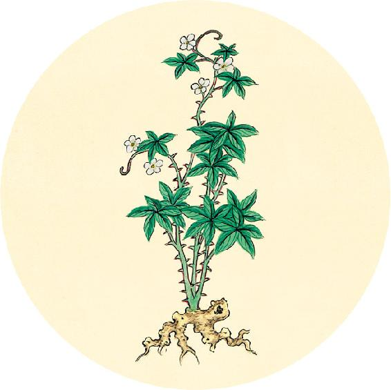
节气茶方（二）
养胃止痛茶
原料：陈皮1个、蜂蜜半杯（枣花蜜最佳）。
做法：
1. 将1个陈皮和5杯冷水下锅，水开后转小火煮5～10分钟。
2. 将煮好的陈皮水晾到温热，加半杯蜂蜜调化，分成三份。
3. 早午晚饭前空腹喝一杯，一日三次。
功效：理气止痛、促进胃溃疡愈合。
适合人群：慢性胃溃疡春季发作者。
【释义】黄帝说：上古时代的大医，制成了汤液醪醴，只用来祭祀和宴请宾客，而不用它治病，这是为什么呢？岐伯说：自古大医做汤液醪醴，是以备万一的。所以上古时做汤液，只是放着而并不服用。（因为这是“上古天真”之世，人们懂得顺应自然，不易得病，无须服用。——允斌注）
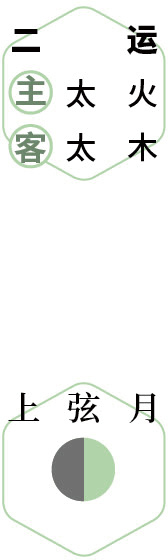
品茗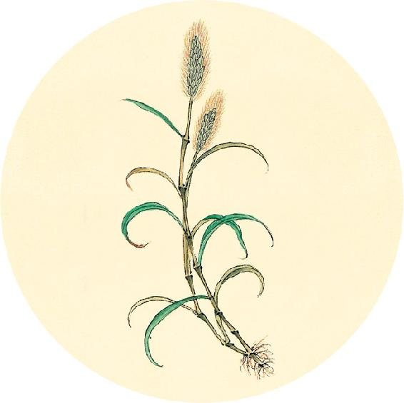
二十四节气茶养生
今年谷雨节气品茶推荐：绿茶。
养咽清嗓茶
原料：绿茶12克、槐花蜜2大勺。
做法：冲泡绿茶，加槐花蜜，每隔十几分钟喝一小口，尽量让茶水在咽喉处多停留一会儿。
注意：
1. 如果咽痛，多加蜂蜜。
2. 咽喉红肿，加牛蒡。
中古之世，道德稍衰，邪气时至，服之万全。
——黄帝内经·素问·汤液醪醴论
惜春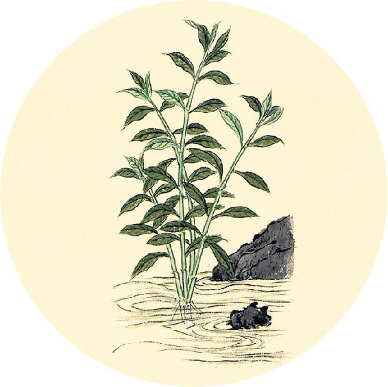
健康提示
谷雨节气的养生功课：清肝养脾。
谷雨节气是春天的最后半个月，这时容易出现咽痛、眼睛红、血压升高的症状。女性容易出现经期综合征，感觉烦闷，精神不集中，容易疲劳等。
宜饮春茶，食蜂蜜、百合等清润之品。
今年谷雨特殊的养生要点——
今年谷雨节气，还要预防湿热和传染病。
保养重点：心、肝、胆。
容易出现的问题：口舌生疮、过敏、发热、传染病。
【释义】中古时代，养生之道渐衰，人体常被外邪侵害，服用汤液醪醴，病就会好。（中古之人虽得病，多是外界因素造成，用饮食疗法足矣。——允斌注）
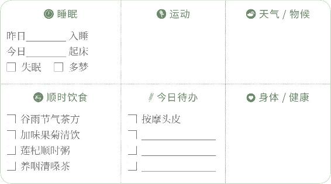
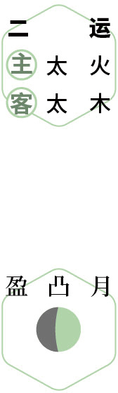
读书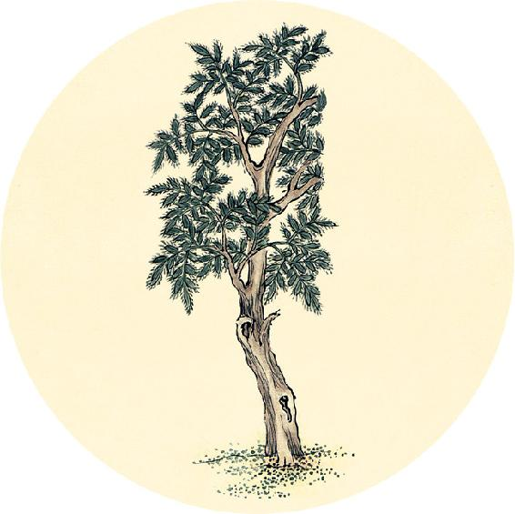
一候反思
蜂蜜是蜜蜂采花蜜酿制而成，结合了动物和植物的精华。不同的蜂蜜效果有一定区别，可以根据身体的不同需要来选择蜂蜜。
⃞ 脾胃虚弱，用柑橘蜜或枣花蜜
⃞ 胃溃疡、胃痛，用柑橘蜜
⃞ 咽喉炎、眼睛发红，用槐花蜜
⃞ 咳嗽、发炎，用荆条蜜
帝曰：今之世不必已何也。岐伯曰：当今之世，必齐（zī，通“资”）毒药[毒药指指药物。（有些药物是药食同源的，可以作为食物来吃；而有些药物不宜做食物，只宜入药，这种药物古人就称为“毒” 。——允斌注）]攻其中，镵（chán）石（镵石指锐利的石针。）针艾治其外也。
——黄帝内经·素问·汤液醪醴论
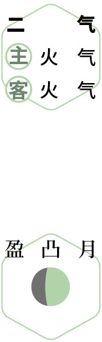
春宴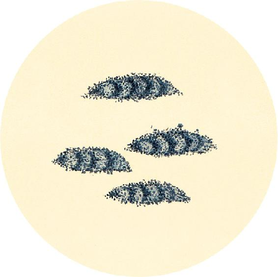
健康提示
蜂蜜养护咽喉的功效
蜂蜜有消炎的作用，也有促进伤口愈合的作用。
经常久咳或者有咽炎的人，咽喉部位会有增生或小的伤口，因此，用蜂蜜来养护效果最好。
槐花蜜的消炎效果比普通蜂蜜更强，而且还有清肝火的作用，尤其适合咽痛的人饮用。
【释义】黄帝说：当今时代，人吃了汤液醪醴，而病不一定都好，这是为什么呢？岐伯说：当今之世，人有病必定要用药物来内治，针灸来外治。（人们得病的原因变复杂了，又不讲究养生和治未病，疾病已经成形才治疗，所以饮食疗法还不够，需要用到药物和针灸。——允斌注）
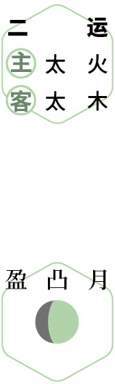
醉芳荫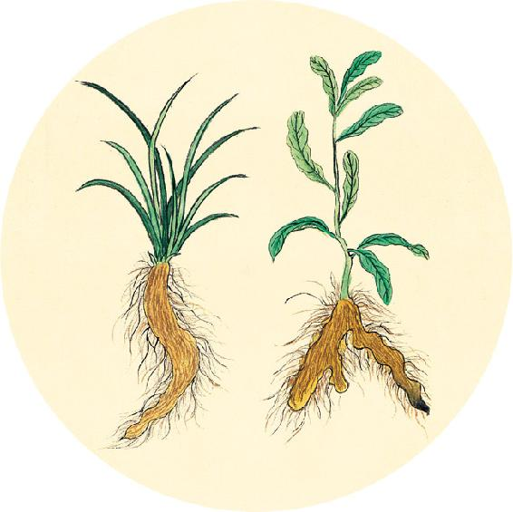
健康提示
《黄帝内经》认为一年有五运，每运历时两个多月，分为主运和客运，分别以五行木、火、土、金、水代表。“运”指的是天体的“运行”对地球环境的影响。
主运每年运行的顺序不变。只有强弱之别。第一运是“木”，这个阶段春回大地，有利于草木萌发。第二运“火”，这个阶段大地将变得温热，适宜万物长大。
现在正处于辛丑岁的第二运，历时73天（4月3日10:02—6月15日11:15）
主运——太火；客运——太木。
帝曰：形弊血尽而功不应者何？岐伯曰：神不使也。
——黄帝内经·素问·汤液醪醴论
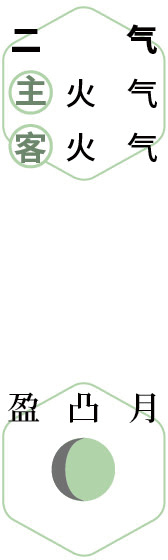
问安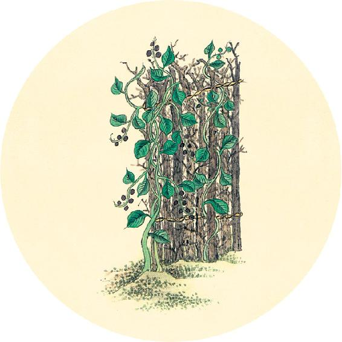
健康提示
春天就快结束。春夏交替时，要注意预防“换季病”，顺时饮食不要间断。
从下周立夏起，进入一年一度喝姜枣茶的两个月，可以开始准备原料了。
生姜和大枣搭配在一起的功效非常大，能健脾护胃、补中益气，提高人体的抗病能力和自愈能力。
今年全年人体易感寒湿，姜枣茶可以多喝一段时间。
【释义】黄帝说：病人形体衰败，气血竭尽，治疗不见功效，是什么原因？岐伯说：这是因为病人的神机已经不能使针灸和药物发挥作用了。

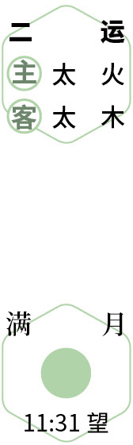
花前望月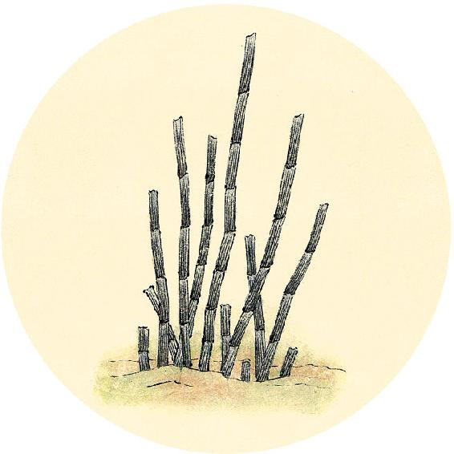
健康提示
《黄帝内经》将一年按天气变化分为六个阶段，每个阶段顺时防病和养生的重点不同。今年全年可以每天喝莲杞顺时粥（配方见2月10日），同时用以下分阶段食方来加强保健，每个食方吃两个月。
辛丑岁初气保健：肉桂陈皮四物饮（做法见3月12日）
辛丑岁二气保健：加味果菊清饮（做法见3月30日）
辛丑岁三气保健：桑果百合四物膏（做法见5月13日）
辛丑岁四气保健：桂花葛根粉（做法见7月29日）
辛丑岁五气保健：五味茱萸梅子汤（做法见10月5日）
辛丑岁六气保健：参芪补心养阳汤（做法见11月30日）
有特殊需要的人在这里打钩
⃞ 按2021年1月4日自测，肉桂陈皮四物饮可以多服用一段时间。
⃞ 按2021年6月25日自测，桑果百合四物膏可多服用一段时间。
帝曰：何谓神不使？岐伯曰：针石，道也。精神不进，志意不治，故病不可愈。今精坏神去，荣卫不可复收。
——黄帝内经·素问·汤液醪醴论
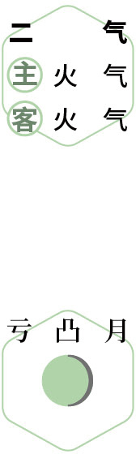
煮茶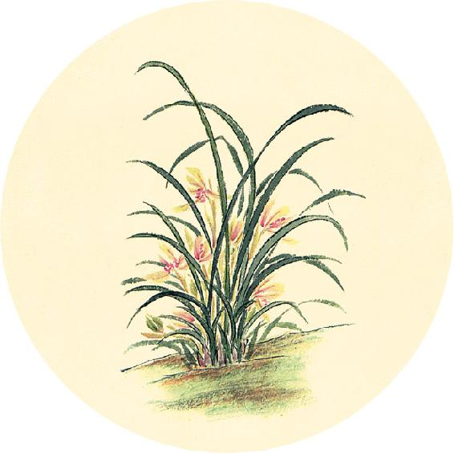
二候反思
这个春天是否有过以下问题：
⃞ 口气重
对策：疏肝健胃——舒肝解郁茶（见3月22日）。
⃞ 半夜醒
对策：补肝血——桂圆百合银耳羹。
⃞ 口腔溃疡超过2次
对策：祛湿毒——将吴茱萸打成粉，加醋调和，贴敷脚心，每周5次。
以上方法坚持3个月。
【释义】黄帝说：什么叫作精气神不能发挥作用呢？岐伯说：用针石治病，只是引导气血。主要还在于病人的精神志意。如果病人的精气神散越，志意散乱，病是不会好的。而现在病人精气已败坏、神气已涣散，营气和卫气已经不可以再恢复了。
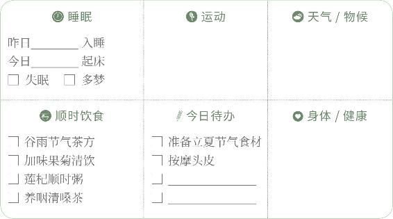
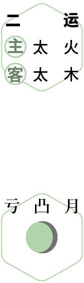
品香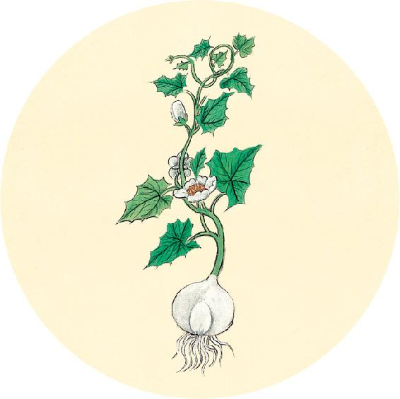
健康提示
下周日是母亲节，可以利用五一假期准备健康养生礼物。
为母亲煮一碗甘麦大枣汤（做法见12月18日）。
为母亲配一份清温手心贴（做法见11月1日）。
为母亲熬一瓶滋阴桑果百合四物膏（做法见5月13日）。
为母亲奉一杯萱草忘忧茶（做法见5月1日）。
何者？嗜欲无穷，而忧患不止，精气弛坏，营泣（sè，“泣”字为“涩”字的误写）卫除，故神去之而病不愈也。
——黄帝内经·素问·汤液醪醴论
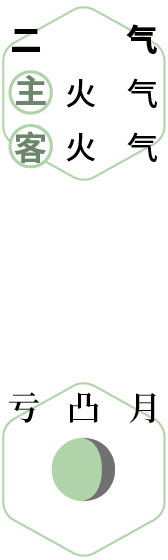
辟螨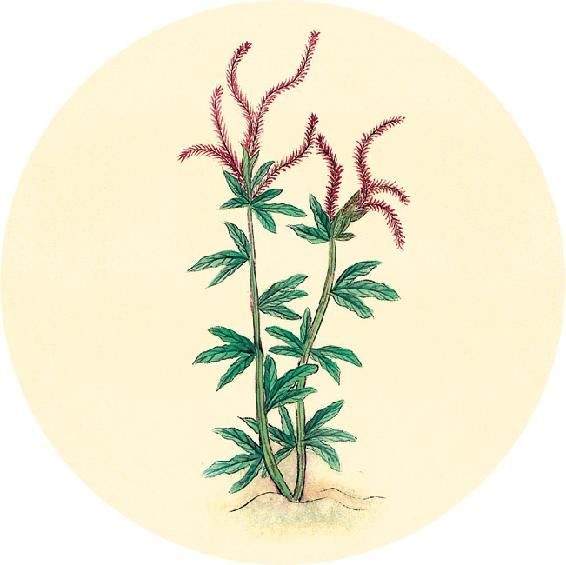
节日食方
送给母亲的茶方：萱草忘忧茶
原料：干黄花菜25克、蜂蜜适量。
做法：煮水，或沸水冲泡，闷制20分钟后，趁热饮用。
功效：滋阴、理气、解郁、止痛、健脑、安五脏、抗衰老。
注意：
1. 哮喘病人忌服。
2. 黄花菜只能用晒干的，新鲜的黄花菜不可食用。
3. 也可将黄花菜煲汤食用。
【释义】为什么病会发展到这样呢？主要是由于嗜欲太过，又忧患不休，精气衰败，营血枯涩、卫气丧失功能，所以神机涣散，而疾病不能痊愈了。
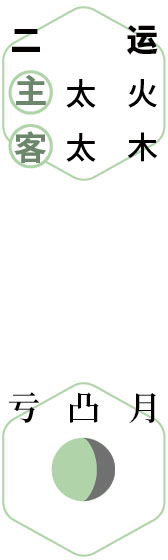
听鸟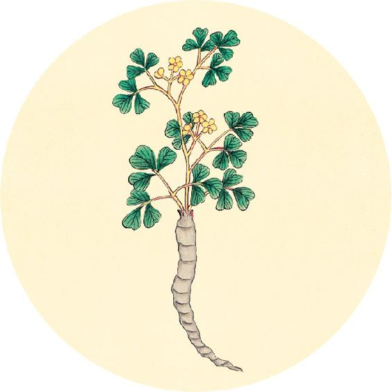
春季回顾
6个节气中有________个节气坚持了节气饮食。
春季的养生功课还做了（请打钩）：
⃞ 防感护生汤 ⃞ 肉桂陈皮四物饮
⃞ 加味果菊清饮 ⃞ 舒肝解郁茶 ⃞ 不生气
赏花、春游，地点________________________________________
身体哪些方面有改善________________________________________
是否生过病________________________________________
我给自己的春季养生功课打________分。
夫病之始生也，极微极精，必先入结于皮肤。
——黄帝内经·素问·汤液醪醴论
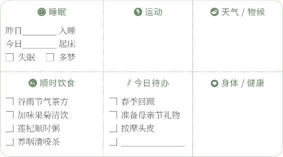
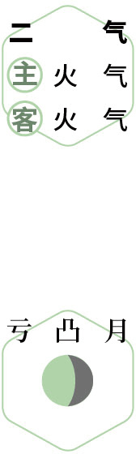
反思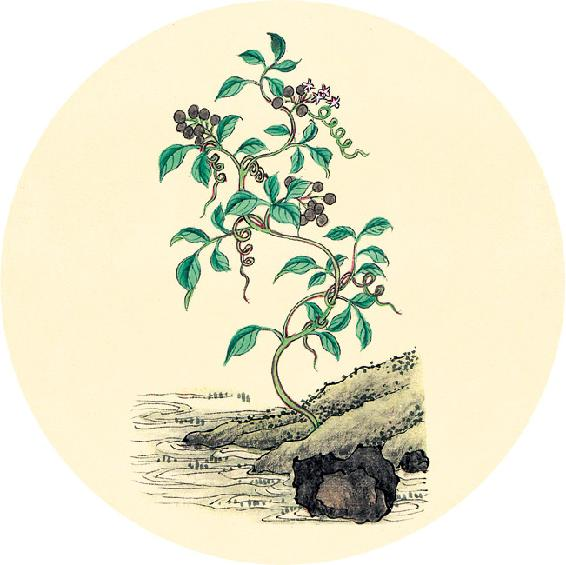
食材准备
两日后立夏。
1.核桃壳煮鸡蛋
原料：核桃壳、鸡蛋、酱油、盐。
2. 辛丑岁二气保健方：加味果菊清饮（从春分吃到小满前日，做法见3月30日）
原料：鱼腥草5 克、菊花1 克、罗汉果1/3 个、蒲公英根5 克、牛蒡10 克。
3.立夏到三伏，喝五味姜枣茶（做法见5月5日）
原料：带皮生姜2～3片、红枣6个。
加味（辛丑岁配方）：五味子6克、甘草9克、陈皮1个、罗汉果1个。气血虚的人再加黄芪30克、党参30克。
【释义】病在初起的时候，是极其轻浅而隐蔽的，必先潜留在皮肤里。
送春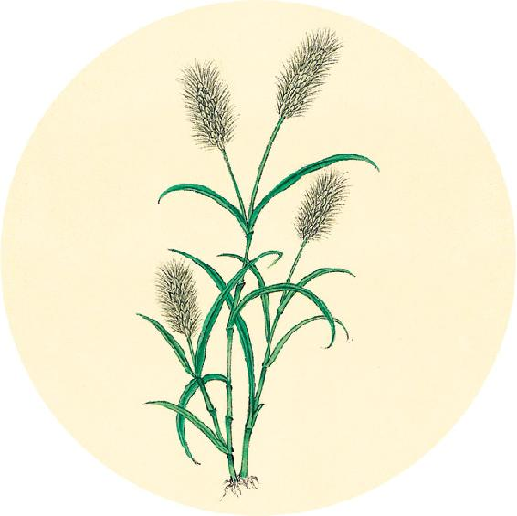
节气总结备
喝谷雨养生茶的次数________
喝加味果菊清饮的次数________
身体哪些方面有改善________________________________________
称量一下自己的体重和腰围，翻到8月11日，立秋一候反思，记录在“立夏前体重/腰围”横线处。
病为本，工为标，标本不得，邪气不服，此之谓也。
——黄帝内经·素问·汤液醪醴论
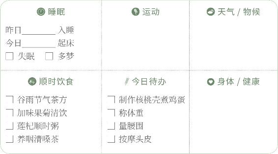
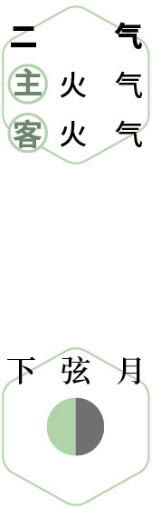
称重